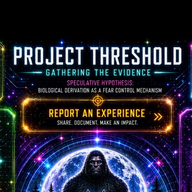

Login »
Settings »
Report an Experience »
Open Reports »
Open Reports »
Open Reports »
Open Reports »
Open Reports »
Explore the Theory »
Open Reports »
Open Forum »

PROJECT THRESHOLD
Gathering the Evidence
⬡
Login
Access your research account
›
◈
Report an Experience
Share your encounter
›
⬡
Explore the Theory
The biological derivation hypothesis
›
◈
Encounter Reports
First-hand accounts
›
⬡
Overlapping Reports
Cross-referenced encounters
›
◈
Fear & Intimidation
Psychological impact reports
›
⬡
Lessons & Integrated Reports
Synthesised research
›
◈
Evidence & Encounters
Physical and digital archive
›
⬡
Neutralizing Fear
Countermeasure research
›
◈
Community Forum
Peer research and open investigations
›
⬡
Settings
Preferences, notifications, security
›